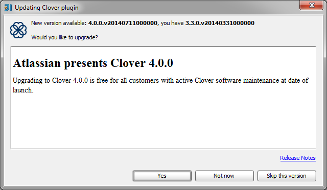
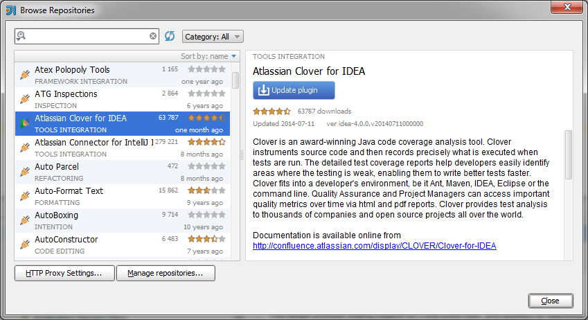

General instructions
By default Clover automatically checks for updates. When new version becomes available, the Clover icon will blink in the status bar. In order to update:
- Click on the blinking Clover icon.
- An update dialog will pop up. Click 'Yes'.
- Restart IDEA after installation.
Screen shot: the update dialog.

In order to update the plugin manually:
- Open 'File > Settings' (Linux, Windows) or 'IDEA > Preferences' (OS X) dialog.
- Open the 'Plugins' tab and click 'Browse repositories' button.
- Find 'Atlassian Clover for IDEA' and click 'Update plugin'.
- Restart IDEA after installation.
Screen shot: the 'Browse Repositories' dialog.

Upgrading from specific releases
Please see the Clover Release Notes.